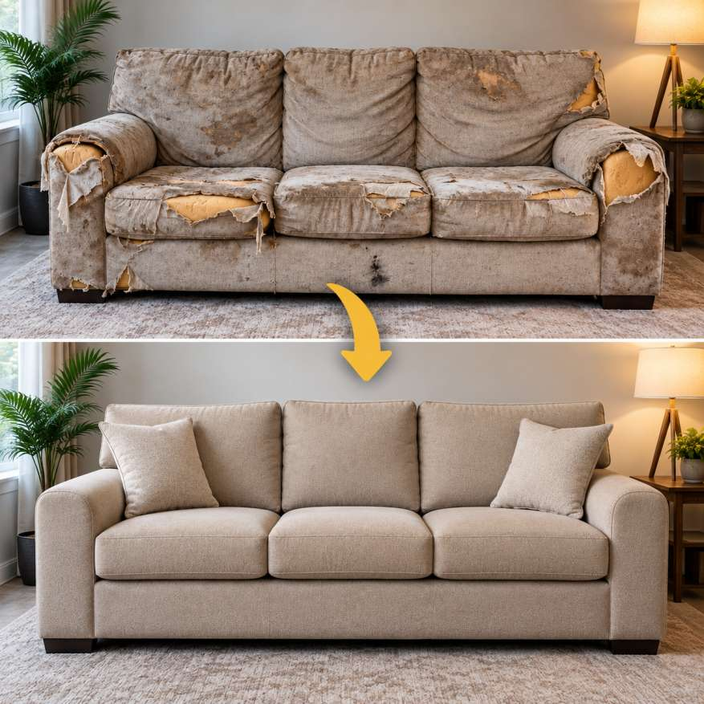

Furniture deserves thoughtful repair, not a quick replacement.
We started Athar Sofa Repair Center with a simple belief: a comfortable, well-made sofa should not be discarded because of worn fabric, a broken joint or tired cushions.
Our team brings practical repair knowledge, upholstery skill and a careful eye for finish to homes across Noida, Greater Noida and Noida Extension. We explain the condition of your furniture clearly, recommend what is genuinely needed and help you make an informed decision.
The standards behind every visit
From the first phone call to the final quality check, we focus on work that feels dependable at every stage.
Doorstep convenience
We come prepared to inspect and complete most repairs at your home.
Skilled craftsmanship
Every frame, cushion, seam and finish receives hands-on attention.
Quality materials
We use suitable fabrics, foam, springs, hardware and accessories.
Clear communication
You receive an honest assessment and transparent quotation before work begins.
Reliable care for the furniture you use every day.
Whether it is a family sofa, dining seating, a wooden set or a favourite lounge chair, we treat each project with the same respect for comfort, function and finish.
Read customer reviewsLocal knowledge, home service
We serve homes across Noida and nearby areas with convenient doorstep visits.
Have a sofa that still has more life in it?
Book a home visit and get a clear, practical recommendation from our team.